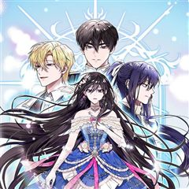
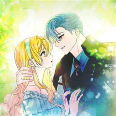
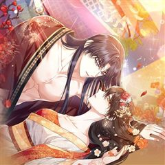
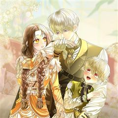
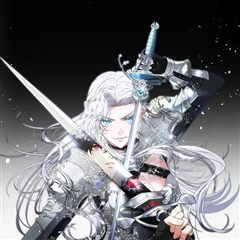
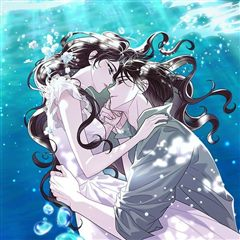
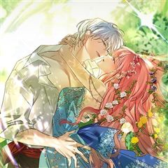
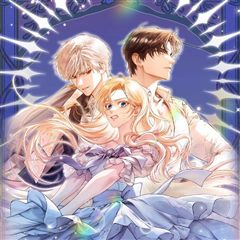

남편을 내 편으로 만드는 방법 같은 웹툰 추천

남편을 내 편으로 만드는 방법 · 시루 / 냥이와 향신료
남편을 내 편으로 만드는 방법 재밌게 봤다면 이 웹툰들도 좋아할 거예요. 같은 장르이면서 눈물샘자극, 빙의, 설렘폭발 같은 요소가 겹치는 작품을, 겹치는 요소가 많은 순서로 20개 골랐어요.
2026-09-29 기준 · 네이버웹툰·카카오웹툰·레진코믹스 · 성인 작품 제외
내 취향으로 직접 골라 추천받기 →-
1
 카카오웹툰
카카오웹툰내가 죽은 뒤 꼬마 신랑은
8살이나 어린 꼬마 신랑과 정략결혼을 하게 된 리베냐. 불의의 사고로 죽었다. 눈을 떴더니 새로운 몸으로 빙의했다? 지긋지긋한 과거의 삶은 지우고, 새로운 삶으로 시작하려고 했는데... 우연히 만난 전남편의 상태가 이상하다? "단 한순간도... 널…
눈물샘자극빙의설렘폭발로판판타지로맨스카카오웹툰에서 보기 → -
2

카카오웹툰그 오토메 게임의 배드엔딩
오토메 게임 속 시한부 여주인공의 친구이자, 남주인공들에게 퇴치 당하는 악역, '에밀리아'에 빙의했다. 하지만 상관없다. 여주인공 '오필리아'는 내게 친구이자, 가족, 세계 그 자체였으니까. "모두 날 잊어도 너는 나를 잊으면 안 돼." 그녀가 죽은…
눈물샘자극빙의로판판타지로맨스카카오웹툰에서 보기 → -
3
 카카오웹툰
카카오웹툰셀럽 레이디
*셀럽: ‘유명인’을 뜻하는 셀러브리티 Celebrity의 줄임말 이 시대를 아우르는 화제의 셀럽, 줄리엣 카레니나! 어느 날, 이 세계 공녀의 몸에서 눈을 뜨는데...! "뭐, 뭐야 여긴?" 둔한 몸, 소심하고 착해빠진 성격. 루베트리아 디올러스의…
눈물샘자극빙의로판판타지로맨스카카오웹툰에서 보기 → -
4

카카오웹툰12시의 마리오네트
『악당을 교화하고, 세상을 구하라.』 세상을 멸망시킬 악당, ‘크루엘로’. 그를 교화하라는 계시를 받았다. 하지만 번번이 실패! 이제 세계 멸망까지는 겨우 일 년밖에 남지 않았는데… 세 번째 시도, 크루엘로의 약혼녀 자리를 대신할 ‘시오라 벨벳’으로…
눈물샘자극빙의로판판타지로맨스카카오웹툰에서 보기 → -
5
 카카오웹툰
카카오웹툰타람 타람 타람
나긋나긋한 움직임으로 들어온 다온이 연회장 중앙에서 멈춰 섰다. 인형만큼이나 무미하고 감정 없는 얼굴이었다. 그럼에도 도도하고 우아해서 얼음 여왕처럼 강렬한 인상을 주었다. 엑서는 다리를 꼬며 낮게 웃었다. “지배자로서, 오늘 밤 널 안겠다.” 운명…
눈물샘자극설렘폭발로판판타지로맨스카카오웹툰에서 보기 → -
6
 카카오웹툰
카카오웹툰집착은 다정하고 집요하게
황량한 레그벨에서 외롭게 지내던 백작 영애, 시오아나. 에티엔을 처음 만났을 때 그는 그녀의 다정한 노예였다. 첫사랑, 첫 입맞춤,모든 처음의 순간을 함께하며 시오아나와 에티엔은 둘만의 비밀 결혼식을 올린다. 불행이 레그벨을 덮쳐오고, 두 사람은 지…
눈물샘자극설렘폭발로판판타지로맨스카카오웹툰에서 보기 → -
7

카카오웹툰꽃잎을 여미다
황금색 눈빛, 어떤 상처도 치유할 수 있는 무소불위의 힘을 지닌 존재. 향족이 바로 아리, 본인이었다. 인간 사냥꾼들에게 노려지던 위기의 순간…! 과거 마음을 나누었던 남자, 도겸이 황태제가 되어 돌아왔다! “내가 그대를 더 넓은 세상으로 데려가 줄…
눈물샘자극설렘폭발로판판타지로맨스카카오웹툰에서 보기 → -
8

카카오웹툰시한부는 흑막가에 위장 취업한다
엄청난 빚만 남기고 아버지가 돌아가신 날, 리비아는 자신이 전생에 죽기 전 읽었던 소설 속 엑스트라로 환생했다는 사실을 깨달았다. 거기까지는 좋았는데……. 자신이 또 시한부, 그것도 피부에 검은 꽃이 피며 죽는 마화병에 걸렸단다. 병을 치료할 유일한…
눈물샘자극설렘폭발로판판타지로맨스카카오웹툰에서 보기 → -
9

카카오웹툰악의 씨앗을 키워 버렸다
세계 최강 검사인 아스트레아. 어느 날 자신이 소설 속 캐릭터로 환생했다는 사실을 깨닫는다. 그것도 최종 보스인, 악신에게 죽임을 당하는 역할로…. 그러다 산행 중 괴한들에게서 구해준 아이가 장차 악신이 될 운명임을 알게 된다. ‘차라리 이렇게 된…
눈물샘자극설렘폭발로판판타지로맨스카카오웹툰에서 보기 → -
10
 카카오웹툰
카카오웹툰남주의 입양딸이 되었습니다
"아이를 입양한다” 어느 날 갑자기 떨어진 북부의 주인 보레오티의 폭탄 발언. 그리고 기적처럼 만난 “검은색”을 지닌 아이. 그런데… “근☆육이 제일 좋아~ ☆불끈불끈☆ 모여라~ ٩(๑˃́ꇴ˂̀๑)۶” “이두근 (ง˙∇˙)ว, 삼두근 (ง˙∇˙) ง…
빙의설렘폭발로판판타지로맨스카카오웹툰에서 보기 → · 남주의 입양딸이 되었습니다 같은 웹툰 → -
11
 카카오웹툰
카카오웹툰마론 후작
하필이면 곧 죽을 운명인 희대의 악녀, 헤일리의 몸에 빙의했다. 빙의에 적응하기도 전에 협곡 아래 오염된 지역에 버려지고 말았다. '명색이 빙의자인데!' 하지만 죽으라는 법은 없었는지 “알겠냐? 이미 지나간 과거에 집착해서 화를 내다보면 내일의 일을…
빙의설렘폭발로판판타지로맨스카카오웹툰에서 보기 → -
12
 카카오웹툰
카카오웹툰전남편이 남주가 된 것에 관하여
남편의 반란이 실패하며 함께 처형당한 래나 코넬리. 평소 즐겨읽던 소설 속 엑스트라 마법사, '아샤 블리스'에 빙의된다. 원작의 심기를 거스르지 않고 쥐죽은 듯 살고 있던 어느 날, 카르한 제국 최고의 권력자이자 소설 속 남자주인공 '칼리고 에투스'…
빙의설렘폭발로판판타지로맨스카카오웹툰에서 보기 → -
13
 네이버웹툰
네이버웹툰피폐물을 힐링물로 만드는 방법
[살아생전 즐겨보던 소설에 환생했다.] 너무 진부하다구요? 아닐 걸요! 왜냐면 그 소설이... 19금 피폐물이거든요...! ̗̀(ꀬ⏖ꀬ∴) 예쁘고 상냥한 여주인공의 동생으로 환생했지만, 언니의 새드엔딩을 지켜볼 수 없었던 레나티스는 언니 대신 잘생긴…
빙의설렘폭발로판판타지로맨스네이버웹툰에서 보기 → -
14
 카카오웹툰
카카오웹툰악녀의 맞선남이 너무 완벽하다
소문난 악녀 '이본 아젠트호즈'에 빙의 했다! 원작에서는 남주와 맺어진 여주를 질투하다가 비극적 최후를 맞은 악녀였지만, 빙의 후 이본은 평화롭게 다이아 수저의 삶을 즐기기로 다짐한다. 하지만 소설과 전개가 달라지는데?! “이본의 .. 어장이라면,…
빙의설렘폭발로판판타지로맨스카카오웹툰에서 보기 → -
15
 카카오웹툰
카카오웹툰마음이 이끄는 대로
왕과 국혼을 앞두고 물가에 몸을 던진 공작가의 딸 헤일리에 빙의한 이재. 그런데 왕의 등 뒤로 보여선 안될 원혼들이 보인다! 국왕 로더릭에게 몰려드는 원혼들을 퇴마하려 고군분투하는 날이 이어진다. 로더릭은 이재와 함께 있으면서 맑아지는 정신과 신체…
빙의설렘폭발로판판타지로맨스카카오웹툰에서 보기 → -
16
 카카오웹툰
카카오웹툰감금물의 하녀로 살아가기
대한민국의 평범한 회사원이던 나, '유정인'. 교통사고를 당하고 눈을 떠보니 왕자를 탑에 가두고 유린한 하녀 '로제'가 되어 있었다. 왕자가 성 밖으로 나가는 순간 분명 난 죽은 목숨이야…! “왕자님과 거래를 하고 싶습니다.” 동의 없는 스킨쉽 금지…
빙의설렘폭발로판판타지로맨스카카오웹툰에서 보기 → -
17

카카오웹툰흑막의 독 감별사가 되겠습니다
선량한 직장인이었던 내가, 피폐 소설 <독사과>에 빙의했다. 그것도 교수형을 앞에 두고 독살로 생을 마감하는 악녀인, '지젤 로이즈빈'으로! 그런데, 암살자들이 가져온 독이 안 통한다? 심지어 과일 맛이 나잖아! "이건 양이 적으니까 괜찮아. 얼른…
빙의설렘폭발로판판타지로맨스카카오웹툰에서 보기 → -
18

카카오웹툰감방에서 남자주인공을 만났습니다
감방에서 남자 주인공을 만났다. 쟤가 19금 피폐 소설 남자 주인공이란 건 알겠는데……. 왜 저래? “왕! 왕! 왕! 으르르르.” 정신만 짐승이 되는 저주에 걸렸다더니……. 그렇다고 저주에서 깨어난 모습은 어떠냐. “채, 채, 책임질 거, 아니면,…
빙의설렘폭발로판판타지로맨스카카오웹툰에서 보기 → -
19
 카카오웹툰
카카오웹툰엑스트라에게 남주들을 빼앗겼다
원작에 등장하지도 않은 엑스트라에게 남주들을 빼앗긴 여주… 그게 바로 나다. 마왕을 무찌르고 돌아오는 길에 혼수상태에 빠진 셀로니아. 몇 달 동안 사경을 헤매다 살아났건만, 뭐? “파혼해 주었으면 해. 그레이스와의 결혼을 서두르고 싶거든.” “기사의…
빙의설렘폭발로판판타지로맨스카카오웹툰에서 보기 → -
20

카카오웹툰남주들과 외딴섬에 갇혀버렸다
소설 속 남주들과 외딴섬에 갇혀버렸다. 그것도 19금 피폐 소설에 나오는 남주들과 말이다. 하지만 내가 빙의한 마거릿이란 캐릭터는 여주를 시기하여 괴롭히다가 곧 남주들에게 죽을 운명. 그러니 살아남으려면 일단 남주들에게서 도망가야 하는데... "마거…
빙의설렘폭발로판판타지로맨스카카오웹툰에서 보기 →